Figuring Space
Gilles Châtelet
Chapter 1: The Enchantment of the Virtual
Chapter 2: The Screen, the Spectrum and the Pendulum
Chapter 3: The Force of Ambiguity
Chapter 4: Grassmann's Capture of the Extension
Chapter 5: Electrogeometric Space
Appendix I: Note on Quaternions
Appendix II: Note on Hamilton’s Astronomical Example
Appendix III: Hamilton’s Operator ∇
Chapter V. Electrogeometric Space
On several occasions, and in particular in his work on the deduction of dynamic systems1, Schelling suggests a common genesis for spatial dimensions and magnetic and electrical phenomena. He draws up the chart:
| Magnetism | Length (stretching) |
| Electricity | Width (spreading) |
Schelling observes that length and magnetism appear in the intuition as a paralysed direction (a bar), whereas width and electricity exemplify a polarization where the separation is already finished (intuition of two sides or of two separable types of change in nature). To overcome this opposition between the two polarizations and to conceive of them in a single intuition, Schelling is driven to bring in a third dimension which makes it possible, through penetration, to articulate the ‘stretching’ with the ‘spreading’ and heralds the arrival of the electrogeometric space of nineteenth-century physics.
The following analyses complete those conducted in the preceding chapter. Once more, a dialectical balance will make it possible to grasp an electrodynamic round-the-Two and to understand how Faraday and Maxwell dismiss diagrams more or less explicitly related to attraction-repulsion and the hegemony of the longitudinal, in favor of other intuitions and other allusive devices (like the solenoid and the axis-loop system) which, as Schelling’s Deduktion demands, engage space completely and signify the victory of the lateral.2 The indifference centre is no longer posited as the geometrical middle of two ‘material points’, but emigrates to the heart of the interlaces and embraces its circuits.
1. Length and Magnetism
The length presents itself to the intuition as the ‘biggest’ of the dimensions, that along which my look can travel, quite happy to have found a ‘hold’. The width offers itself unresistingly as a parametrage, as a mode of measurement totally external to the object: it is the dimension according to which this object appears most bulky and therefore it is the one that any tendency toward displacement will seize; it is enough to think of the perplexity that square or ‘cubic’ objects excite.
The length has no power of envelopment and attempts to embrace the object by laying units end to end. In this sense, it goes hand in hand with addition and is very often associated with the interval of time required for the completion of a journey. Indeed, the length is often measured from a given origin , from which an interval has stretched itself out (see fig. 1).

The length has very little to tell us about the gesture that unfolds it: it dismisses and flees the point from which it rises and Schelling could well have given it as a privileged figure of finitude, for the disequilibrium between the ‘form’ (the interval ) and the ‘root’ () from which seems to ‘come out’ is pushed to its limit.3 How are the roles between the origin and the interval to be rebalanced? The cliché of stuck in the plane like a nail, on which a length can be hung, must be smashed: once again, it is necessary to invent another articulation. I can therefore decide to see two extremities spread out with its indifference centre: the length ‘is in the process of being born’; it is no longer the simple outpouring of a transitivity in nature and in the mind. To be measured concretely, this opening out assumes the mobilization of an articulation with two ‘sides’: compasses or pincers. Hence I have thereby as it were propelled a hand by thought and one might be tempted to say that the pincers or compasses give a point of view to the hand, by associating an angle in which the interval is ‘seen’ with the grasp. The angle refers to a degree of embracing and allows the lateral to resume its rights. It invites a second dimension, another world where the geometer may virtually propel himself: the hand inhabits the angle and the angel incites the hand to open out into two sides (see fig. 2).
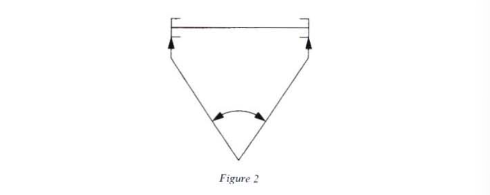
We get the full measure of what distinguishes the ruler from the compasses and the angle. The ruler implies an end-to-end placement of standard measuring units, a manipulation of a piece of direction. The ruler is a transfer that has been frozen — a bar. It can be only the replica of the dimension that it claims to measure. It suffices imply to propel oneself the length of the object in thought, equipped with a reference sample (assumed to be perfectly rigid and manipulable) and a measurement is obtained by juxtaposition, which multiplies errors.
The length is content to be embodied in channels and segments which are endowed with two distinct extremities, but as it were are welded to the spread-out element embodied by the bar. We are thus in a better position to say precisely why the table at the beginning of this chapter places length and magnetism together. In his Deduktion, Schelling can write without hesitation:
Length can absolutely only exist in the form of magnetism, where magnetism is generally what governs length in the construction of matter.4
Like the interval, the magnet is a simple piece of dimension, a bar with two poles embedded in it: a North pole and a South pole. This terminology shows the conventional character of this polarization, which is simply pinned to matter like an orientation label.
The polarization is entirely subject to two distance markers that ‘resemble’ it, the ‘true’ North pole and the ‘true’ South pole. The orientation is not therefore decided by an autonomous process, but is simply imported from geographical totems and as it were deposited in the boreal and austral charges. Naturally, this location fails as soon as the bar is taken to one of the poles: a magnet makes it possible to preserve a relic of polarization but not to produce it. These ‘charges’ are not isolable; if I break a magnetized bar, I merely obtain two other bars; magnetic polarization resists division by two. The bars can therefore be split as one pleases (see fig. 4).
The point , where these charges would supposedly neutralize one another, is just a simple (abstract) geometrical middle, which can be reproduced at will, by simulating spatial division, ‘indefinitely’. articulates nothing, which is why it can be ‘nailed’ in the extension at will, while remaining a prisoner of the magnetic matter. This extensive division of invites no dimension: is the fulcrum of nothing and neither carries away nor propagates anything. Not being isolable, the boreal and austral charges induce no current nor any superior mobile unit that might have made appear as the point where the north-south polarization opens out.
2. The Autonomy of the Indifference Centre: Width and Electricity
Associated with the width is the intuition of two autonomous sides, which are obtained by drawing the compass- or scissor-arms apart. These arms open and pivot around an articulation and therefore an indifference centre that propagates mobility, unlike that of a bar, which is sunk into the matter. With width, spatial polarization achieves autonomy. In the same way, electricity, with its charges that are separable by experiment, produces diagrams that are very different from those of magnetism.
With electricity and its isolable charges, it is at last possible to embody the negative. These charges function like ‘algebraic’ masses, capable of neutralizing one another and above all of permitting an electrical splitting of zero. The equation (where and are not zero) shows that the electrical zero opens out into an equilibrium (being able to induce a current, see below, fig. 7) and can by no means be reduced to an absence of matter. We should emphasize that such an equation would not permit any solutions involving Newtonian masses, which accumulate an entirely static positivity.
There is more: this electrical opening of the zero is graspable by a technical device that is capable of prolonging it. The battery invented by Volta is based on two observations:
- it is possible to divide zero into two opposite polarities by plunging two already oxidized metal plates (brass and zinc) into water;
- by arranging such a system in series, it is possible to increase the effects (see fig. 5).5
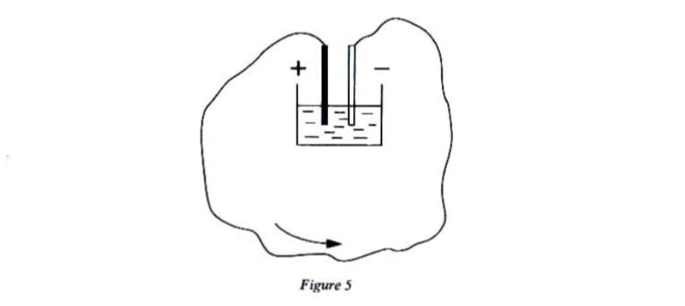
The diagram in figure 5 is crucial, since it condenses almost all the issues of ambiguity and of the technical grasp of the around-the-Two. Any significant opening of zero induces its own spatiality, an ‘around’. Just as the reequilibration of the iteration or accumulation of masses involved a whole plane, the brutal emergence of two opposed polarities, of two ‘opposites’ can be compensated for by a current that exceeds them by going round them. Electrical positivity is not that of accumulation, but that of current that loops the around opened by separation. The era of the circuits has begun and it will come as no surprise if this device crystallizes a new type of intuition linked with the domination of oppositions by loops and bends.
Voltaic currents seriously damage the prestige of the mechanism which is derived from simple transfer and extensive division, to the benefit of lateral transitivities involving a multi-dimensional causality, liberated from the image of the mobile which ‘goes’ from to (see fig. 6).
The metaphor of the positive and negative ‘fluids’ had attempted to counter the ‘self-evidence’ of the solid and manipulable units of mechanics: it had long been known that an ‘infinitely subtle’ fluid could spring in a flash between two points. But the positive and negative polarities, although ‘fluid’, remained embedded in matter like precious jewels that only deigned to show themselves by lightning in a Leyden jar. The polarities and were abolished in a flash of lightning.
We understand that the victory of the ‘fluids’ over the mechanism was thus a half-victory. The latter has much more to fear from Volta’s battery, which domesticates the around that always envelops the birth of a Two. The disequilibrium produced by the cell and its forced polarizations is not easily reestablished if one has been successful in constructing a loop that, by indirectly connecting up the opposition produced by the cell, seizes another dimension: the loop creates an ‘electrical width’ for the battery. For the loop, the separation is not annihilated in the rupture or neutralization. A new around has been grasped diagrammatically in nature and thought and we do indeed rediscover the creative ambiguity of the indifference centre is no longer a point, it has turned itself into a loop and provokes a revolution in the spatial intuition.
Electrodynamics, the theory of charges in motion, is born of the electrical explosion of the zero, which has no mechanical equivalent: a zero mass has no impulse6 and only the accumulation of masses can increase the effects; when they move in opposite directions, they induce an electrical current (see fig. 7).
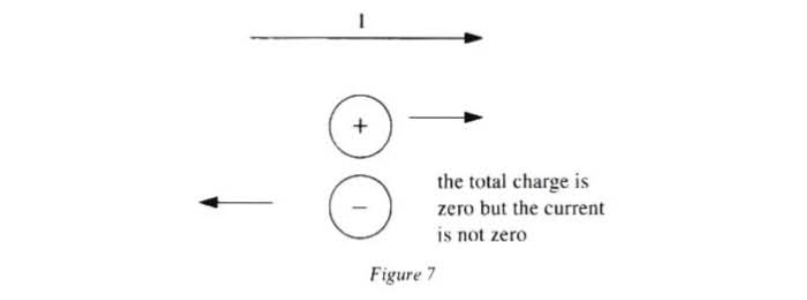
3. Electrical Helices
The electrical explosion of the zero and its looping are going to carry physicists towards what should be called electrogeometry, as soon as they verify that the electrical loop irradiates effects around itself, just as Argand’s balance carried everything onto a plane around its arms. Henceforth it is the elements of current, closed circuits, infinite lines or interlacings of wires which hold the attention. That is why Ampère continually substitutes a ‘conductor folded into a helix’ for the magnetized bar; the diagram of the solenoid is born:
… an assembly to which I have given the name electrodynamic solenoid, from the Greek word solenoides, whose meaning expresses precisely that which is shaped like a channel, that is to say the surface of the form on which all the circuits are to be found.7
The solenoid unwinds a loop around a channel: it articulates electrically a length and an angle or, as we will see in what follows, a translation and a rotation. This articulation is going to make it possible to resolve the key question of electrophilosophy, the unity of electrical and magnetic forces (see fig. 8).

Schelling had observed in this Deduktion that magnetism and electricity were opposed in a kind of dualism parallel to that of length and width. A bar appears as an undivided totality to the sensible intuition, as the magnetic charges that produce no separable forces, whereas the forces derived from positive or negative charges are separate but are not set down as identical for the intuition. The metaphysical problem was therefore: ‘How can two forces be dynamically separate and set down as identical for the intuition at the same time?’8
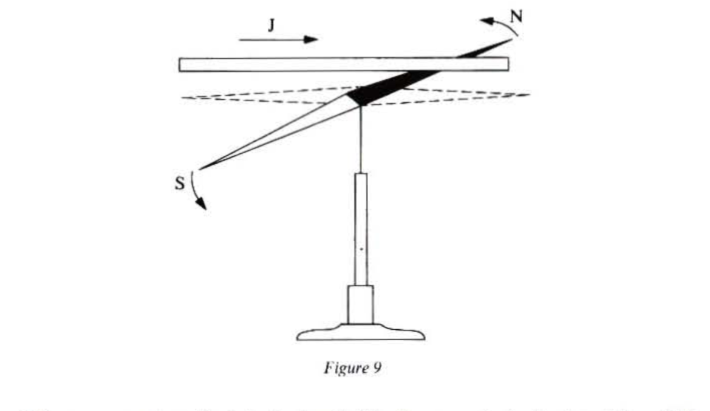
It is necessary to articulate the length (the frozen polarization) and the width (the torn-apart polarization). This can be achieved if one defines a fixed interval in order to produce a height. The helix makes it possible to capture a new dimension:
The particular mediating link by which the two forces can be set down at the same time as non-identical and yet as combined for the intuition is not the line or the surface, but the space itself, that is to say the extensive magnitude in three dimensions [nach drei Dimensionen ausgedehnte Grosse].9
The electrical helix and the solenoid do not just make it possible to smash the spatial clichés of fluids concentrated around poles or points; they demonstrate that a current must appropriate a new spatial dimension. An electrical loop, even a plane, involves and orients the space completely.
Ørsted’s famous experiment10 demonstrates the electrical grasp of an around-the-Two yet more disquieting than the balance or the lever (see fig. 9). We understand the unease of Ørsted and his contemporaries faced with the irruption of a fierce laterality. Ampère recalls there was an initial attempt to tame the latter via the cliché of the vortex.11
The illustrious scientist [Ørsted] who first saw a magnet’s poles moved by the action of a conducting wire into dimensions perpendicular to those of this wire concluded from it that electrical matter turned around it and pushed these poles in the direction of its motion, exactly as Descartes had the matter of his vortices turn in the direction of the planetary revolutions.12
This ‘fluid’ was therefore supposed to deflect the needle with its impact. But Ampère refuses this lame compromise between mechanics, which always boils down to a transference of impulse, and the new electrodynamic forces; he takes a decisive gamble: to grasp the laterality of the circuits and their capacity to subjugate a third dimension by proposing an axial interpretation of magnetic polarizations.
We should first remember how a circuit drawn in a plane induces sides in the plane (see also chapter IV). An observer-witness being permanently placed (Ampère’s ‘bonhomme’), the positive side (respectively negative) is the set of points where the circuit appears to him as being travelled anti-clockwise (respectively clockwise) (see fig. 10).
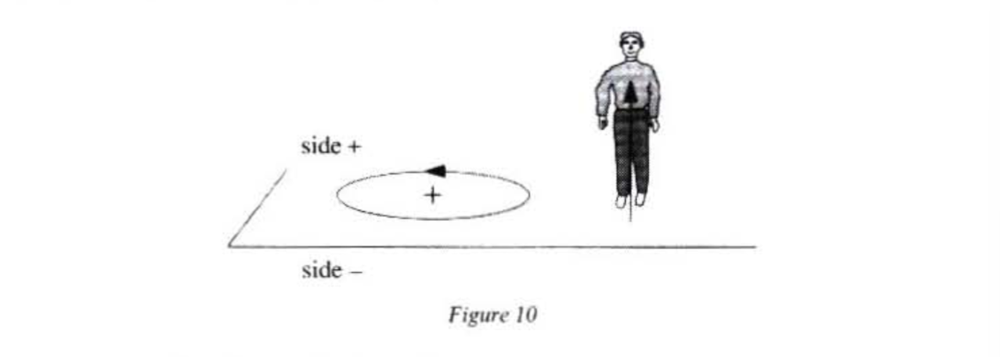
One can likewise, uniquely define an arrow perpendicular to the circuit (a ‘conventional normal’) such that Ampère’s ‘bonhomme’, shot through from head to foot by the current, sees the arrow go in on his right to come out again on his left (see fig. 11). A conventional normal also makes it possible to choose between a ‘front’ face and a ‘back’ face or, which amounts to the same thing, between a ‘negative’ face (South face) into which the arrow goes and a ‘positive’ face (North face) from which it emerges (see fig. 12a). This leads to the equivalent rule of the corkscrew: an ordinary corkscrew, turned in the direction of the circuit, plunges into the South face to come out again through the North face (see fig. 12b).
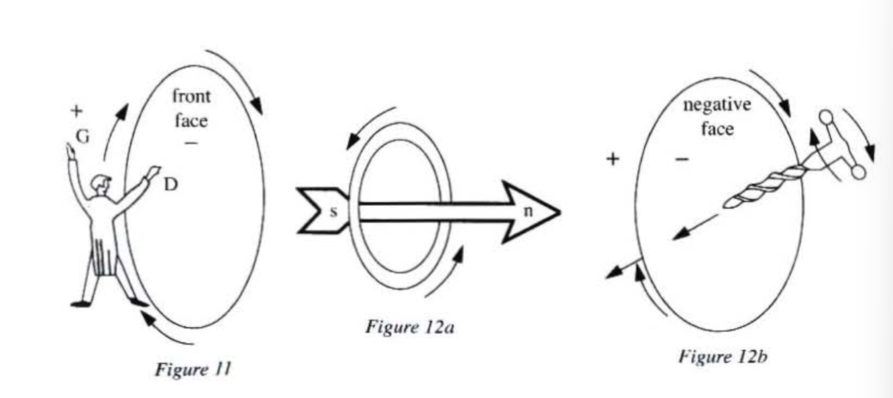
We have therefore just linked a mobility confined within a plane to a penetration aimed perpendicularly to this plane (see chapter IV). It is easy to see that, conversely, the datum of a body or a witness-helix (of a ‘relic of orientation’) makes it possible uniquely to link a rotation with a mark made on an axis or an oriented straight line. We find again here, for the angles, a situation that has already been analysed in chapter IV. Within these rules, it is the mobilities of the entire body (or those of an elementary robot like a corkscrew, capable of capturing and producing them) that are propelled: Ampère’s bonhomme must turn himself from his right to his left in order to follow the circuit with his gaze, the corkscrew transforms a flick of the wrist into a penetration or, what amounts to the same thing, a progressive spreading out into a height.
Here again we see the acquisition of a dimension, which accompanies the dispelling of an ambiguity by an orientation marker. It is easy to see that in the absence of this last articulation of the circuits and axes would be equivocal: a circuit can be seen as ‘positive’ from one side and as ‘negative’ from the other (see fig. 13).
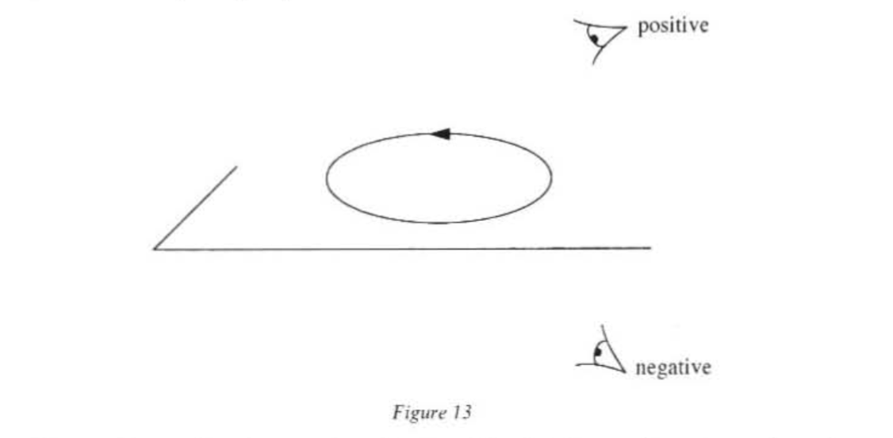
But we have already seen (see chapter III) that in grazing the equivocal a new dimension can be born, even if a less trivial decision is solicited and a more ambitious articulation is involved.
Ampère understands that it is necessary to bring about the birth of the difference between North and South poles by an axis and that a link exists between the undivided solidarity of these poles and the distinction between them which is arranged by a totally external convention. To dissolve these ‘boreal’ and ‘austral’ polarities, he decides to see them as the North and South faces of electrical circuits. This axial grasp of magnetism causes the two poles to emerge contemporaneously and electrogeometry takes over, exploring the beings or forces created by the dissymmetries of rotations.
As long as the manner in which I conceive the action of the magnets is not accepted and these two kinds of forces are attributed to molecules of austral and boreal fluids, it is impossible to reduce them to a single principle: but as soon as my way of seeing the construction of the magnets is adopted, it is seen by the foregoing calculations that these two types of actions and the values of the forces that come from them are immediately deduced from my formula and that, to find these values, it is enough to substitute for the two-molecule assembly, one austral fluid molecule, the other of boreal fluid, a solenoid whose extremities, which are the two determinate points to which the forces in question belong, are placed at exactly the same points where the molecules of the two fluids are supposed to be.
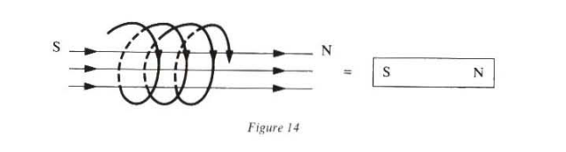
From now on, two systems of very small solenoids will act on one another, according to my formula, like two magnets composed of as many magnetic elements as one would suppose there to be solenoids in these two systems; one of these same systems will also act on the element of electric current, as a magnet does, and consequently all the calculations, all the explanations that are based as much on a consideration of the attractive and repulsive forces of these molecules in inverse proportion to the squares of distances as on those of revolutionary forces between one of these molecules and an element of electrical current, concerning which I have just recalled the law that is accepted by the physicists who do not adopt my theory, are necessarily the same, whether like me on explains the phenomena produced by the magnets in these two cases by electrical currents or whether one prefers the hypothesis of the two fluids.13
We see how far the old convention differs from that of Ampère’s solenoids: the first is based on the persistence and the incrustation of certain entities (the North pole, the South pole), the second on the continuity of the propulsion of orientation (I can choose a contrary convention to interpret , but I have to stick to it). The axial convention and its pieces of evidence (Ampère’s bonhomme, corkscrew, etc.) liberate the full lateral intuition, henceforth free of the scars of magnetism and electrostatic images. This is why the axial polarization mobilizes different allusions from interaction at a distance. The latter required only the passive contemplation of a third party, who was kept apart form the play of the forces. Here, the ‘third party’ is much more active: he turns himself into a corkscrew, composed of a head with a right and a left arm, he propels an orientation and stands surety for the invariability of the sample of orientation.
The laterality experiment dissolves the old substrates: the North and South poles are but the scars of the old imagery: the solenoid and electrical loop liberate the forces sunk into the bars (the pieces of length). As Schelling had sensed, the grasping of electrical and magnetic forces in a single intuition does not consist in identifying boreal or austral ‘natures’ with positive or negative natures, but in understanding that everything revolves around a new involvement of space, around a new way of making choices of orientation reverberate. We rediscover the role of the indifference centre: to increase the toing and froing between nature and thought by propagating ambiguity in order to provoke a decision that involves a larger field. Here, the victory of the lateral over the longitudinal opens out a vast field into which the electrical and ‘galvanic’14 metaphors on which electrogeometers will feed to forge their theories can rush.
4. The Axial as Subversion of the Transitive
We will now examine the stakes of the axial in greater detail and show how electrogeometry is part of the strategy of deliberate ambiguity made use of by Argand to extract two lateral units from one negative unit. We should remember that it was Hamilton who was first to demonstrate the connection between polar vectors and virtual (aims of objects) or actual (displacements from one place to another) grasps.15 In the introduction to the Lectures on Quaternions, he explains (to introduce what we would today call affine space):
In this way, the symbol has come with us to denote the straight line from to , the point being (at first) considered as a known thing, or a datum in some geometrical investigation, and the point being (by contrast) regarded as a sought thing, or a quaesitum; while is at first supposed to be a representation of the ordinal relation in space of the sought point to the given point ; [or] of the geometrical DIFFERENCE of those two points, that is to say, the difference of their two POSITIONS in space.16
Hamilton then gives an example borrowed from astronomy, where is the Earth and the Sun observed from the Earth:
Thus, in the astronomical example of earth and sun, the line has been sent to extend from the plane of observation (the earth), to the place of the observed body (the sun); and to serve to connect, at least in thought, the latter position with the former.
Again, you may have seen that with me the primary geometrical operation denoted by the mark , and called by the name addition, or more fully, symbolical Addition, consists in a certain correspondent ordinal synthesis of the position of a mathematical point in space. Instead of comparing such a position, , with another position , we now regard ourselves as deriving the one position from the other. The point had been before a punctum analyzandum; it is now a punctum constructum. It was lately the subject of analysis; it is now the result of synthesis. It was a mark to be aimed at; it is now the end of a flight, or of a journey. It was a thing to be investigated (analytical) by our studying or examining its position; it is now a thing which has been produced by our operating (synthetically) on another point , with the aid of a certain instrument, namely, the straight line , regarded now as a vector, or carrying path, as is expressed by the employment of the sign of vection, , through the general and identical formulas: That other point, , instead of being now a punctum analyzans, comes to be considered and spoken of as a punctum vehendum; … while the point , which had been analyzed, has come to be called a vectum, according to the general formula: where Plus is (as above mentioned) the Sign of Vection, or the characteristic of ordinal synthesis. From serving, in the astronomical example, as a post of observation, the earth, , comes to be thought of as the commencement of a transition, , while thus beginning at the earth is conceived to terminate at the sun; and conversely, the sun, , is thought of as occupying a situation in space, which is not now proposed to be studied by observation, but is rather conceived as one which has been reached, or arrived at, by a journey, transition, or transport of some moveable point or body from the earth, along the geocentric vector of the sun.17
This long quotation from Hamilton clearly demonstrates the close link between polar vectors and transits. A polar vector always connects, zealously abolishes a gap between two polarities that have already been given as opposed; it always refers to the abolition of a ‘confrontation’: transport of charges, flowing out of liquids that strive to fill a difference in potential, a gap between pre-marked degrees. In the same way as force (see I,2), it presents itself without adornment as a sincere figure of the transitive, as a ‘passage’, as a forced immersion (still to be accomplished or already accomplished) in the successive, as a dotted or real trajectory. The polar vector zealously accounts for, by making it banal, that which is conveyed from a transmitter to a receiver, that which is communicated between markers, and, like all communication, it connects only to neutralize oppositions, to intercalate itself between the degrees of potentials or to join up two ‘levels’.
Polar vectors and translations reduce the grasp of space to a displacement, to a running out along a direction, with no allusion to a width; they are content with merely transmitting to the geometer instructions concerning mobility which come from already conquered dimensions. With the axial, a genuine geometric humour finally bursts in with the budding of another dimension: height with the helix, thickness with the corkscrew. The axial vector does not claim to trace a transport, does not refer to any ‘opposites’ that it is constantly neutralizing. It exists only as an articulation of a rotation and translation which compels the geometer to orient himself within the whole space. It asserts as positive the non-canonical character of this articulation which results from the dispelling of an ambiguity and not from a logical deduction or the invitation to embrace a trajectory. The axial is innocent of any unwinding: it succeeds in contriving a density for the spatial.
A transport, a vection act, penetrates nothing: the gesture that directs it is immediately swallowed up in the length, whereas the axial unscrews another dimension by appropriating a trick practised in a perpendicular plane. The axial transfixes a face without displacing it, at the same time as causing sides to emerge: there is something cruel and perplexing about the screwings and the unscrewings. The polar vector links degrees of potential, whereas the axial torments the spatial to extract degrees of penetration. Given a corkscrew, the axial unscrews the longitudinal to carry it off into the helicoidal. It therefore leads a successful, calculated subversion of the transitive by being able to see two rotations sketched in dotted lines in the axial vector and to opt for one of them by a process of orientation, just as Argand’s balance could extract two lateral units and choose one of them to guide a rotation.
Extracting degrees of penetration by taking the ‘square root’ of a transport of a vection act: we are going to see that Faraday, Hamilton and Maxwell could all three have recognized themselves in this programme. All three experimented with devices for coalescing degrees (see II,1) that no longer only unfold them along a trajectory by making the forces work, but that win them for a conquest of the density, substituting corkscrews for the trolleys and rulers of mass of mechanics (see fig. 15).
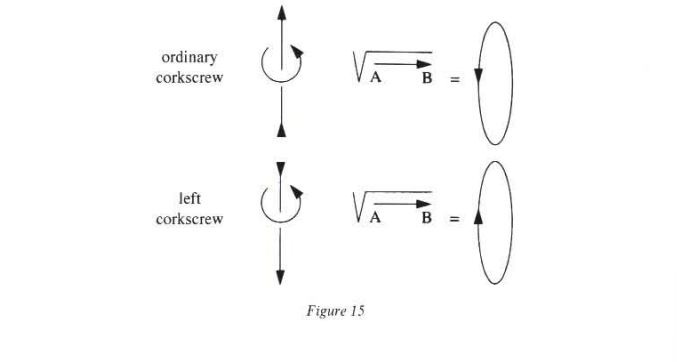
5. The Electrogeometric Experiment as Square Root
Henceforth the axial, or more precisely the axis-loop interface, takes the place of the indifference centre and sustains the whole electrogeometric edifice just as the centre of gravity sustained Newtonian philosophy. We know about how the overhanging centres can overturn entire continents of knowledge by subordinating rebellious heterogeneities to symmetrizing devices: it is thus that Newton, discovering the compensation of centrifugal forces by centripetal forces, abolishes the frontier that isolated ‘on high’ (the celestial world) from the world ‘below’ (the sublunary world). As for the new physics, it demanded the dismissal of the apparent truths of interaction at a distance and required the experience of an equilibrium between translations and rotations. With the axis-loop interlace we are going to rediscover all the traits that characterized an allusive device in the diagram of the balance (see chapter III): a great capacity to condense and expand the intuition, the combined creative compressions of the orientation and the square root and, finally, an operative pugnacity which maintains its place in the most up-to-date research.
Faraday, Hamilton and Maxwell in their own way all experimented with the interlace and discovered in it a very particular cohesion and autonomy, from which the analyses that follow have taken three fundamental features:
We are not dealing here with a real joint as in the mechanical ‘base-roller’ gear wheels (see III,5,C), which articulates two extensions through immediate contact. The axis and the loop interlace like the links of a chain, but knotting together, relations of position, with no material links. The gearing and its immediate centre burst into lines of force which do not simulate real outflowings, but sketch the actions that emanate virtually from ‘real’ circuits (see fig. 16).
The lines of force weave a ‘field’, a system of reverberation and resonance between the space and the geometer or physicist; one might speak of a preparation of space for experimentation, analogous to that of the moved awakened to mobility (see I,1). The mechanical vision made nothing reverberate: it was happy just to decant impulse whereas electrogeometry, by successfully meeting the ordeal of ambiguity, can gain for itself a reserve space for the unfolding of virtualities — neutral territory that authorizes and gives rise to unprecedented experiments; what happens if one turns this circuit a little, if one mixes this one and that one up?
This neutral territory is not an indefinite or residual ‘space’; its cohesion is inherited from a certain reciprocity of the polarizations associated with the transports of charges (currents). To the transitivity and the reality of these currents — represented by ‘true’ vectors — responds the axial character of the magnetic field that they induce.
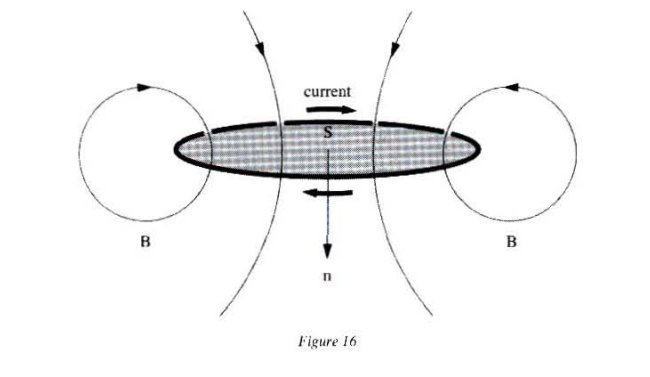
- The interlacing of the circuits and the lines of field (see fig. 16) demonstrates spatially the closure by looping of the real and the virtual, of the polar and the axial. The latter forges an entirely singular link between the order of the causalities of the figures, between the ‘physical’ and the ‘geometric’, and guarantees the axis-loop system an entirely remarkable cohesion.
A. Faraday: the pedagogy of the lines of force18
This conjunction of elasticity and reciprocal influence does not escape Faraday. It has to be obtained through experiment, since the fascinating world promised by Ørsted’s discovery could not be tamed like the simple physical ‘translation’ of a mathematical theory that is already available. Faraday takes an inspired position: the diagrams of interlaced axis and loop possess a peculiar autonomy and an allusive power that must be respected and not treated like an exercise in which a mathematical ‘form’ is applied to physical ‘phenomena’ (see fig. 17).
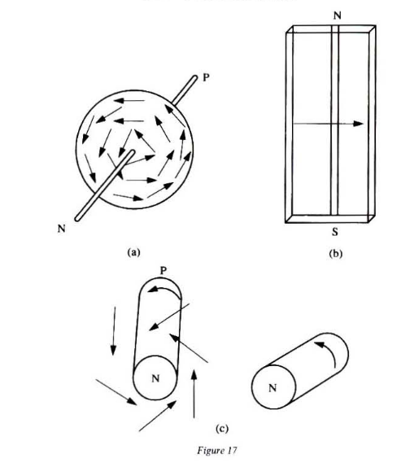
Faraday’s experiments are not enslaved to ‘predictions’, but instead strive to establish a new overhanging point in physics by defining a ritual of gestures which is always carefully accompanied by diagrams. Their aim is to produce a protocol for approach that is sufficiently bold and sufficiently articulated to release all the possible reverberations of the interlace. To experiment is therefore as it were to conspire with electrical and magnetic forces in order to free oneself and nature from the yoke of the transitive and the distance. Faraday wants to stage the rotational and the lateral in order to saturate himself with self-evident facts, which is why, from 1821-22 (a year after Ørsted’s experiment), he publishes several articles with revealing titles: ‘On some New Electromagnetical Motions and on the Theory of Magnetism’ (Quarterly Journal of Science, 12, 1821, pp. 74-96), ‘Electromagnetic Rotation Apparatus’ (ibid., 12, 1822, p. 186), ‘Note on New Electromagnetical Motions’ (ibid., pp. 416-21). Here, constructing an electromagnetic motor is not the same as verifying a principle or illustrating a theory; rather, the goal is to demonstrate the autonomy of the axis-loop system by showing its capacity to capture and above all to reproduce certain gestures at will. indeed, Faraday sees very clearly that the cohesion emanating from the interlace goes beyond any formulation in terms of ‘deduction’: the motor can extract rotation from the axis-loop, without concern for being ‘deduced’ and while remaining outside any subordinate relation to a pre-established doctrine.
Before Faraday, the rotational and pivotal were either captives of the physicist’s body, or accessible by contemplating the motion of distant stars. With Faraday, thanks to an ‘operational metaphor’ that does not entirely belong either to nature or to thought, the rotational ‘escapes the hands’ of the physicist and reproduces itself as it pleases, demonstrating the full autonomy of the electromagnetic world.
Faraday also wanted to mark still more clearly the gulf that separated electromagnetism from the mechanics of interactions at a distance, which are indifferent to the relations of reciprocal perpendicularity and orientation. It was therefore a matter of some urgency to make the relations of position visible and pugnacious.
It had long been known how to illustrate the actions of a magnet on iron filings by lines of force (lineae virtutis)19. Faraday turns physics on its head by deciding no longer to see them as subsidiary figures, but as incitements to provoke space, as diagrams, as dotted-line experiments alluding to ‘real’ experiments that manifest latent actions. Lines of force are neither ‘real’ nor ‘artificial’; they do not mathematize forces; they do not pin geometrical onto physical, rather they substitute an ideal, but elastic and tough, network, which allows virtuality to reclaim its rights.
Lines of force paint a quite different landscape from the arrows implanted in mechanical matters by an impatient understanding as a sign of exuberance (see I,2). Maxwell saw them as animating space like a jungle:
[N]othing is clearer than your descriptions of all sources of force keeping up a state of energy in all that surrounds them, which state by its increase or diminution measures the work done by any change in the system. You seem to see the lines of force curving round obstacles and driving plump at conductors, and swerving towards certain directions in crystals, and carrying with them everywhere the same amount of attractive power, spread wider or denser as the lines widen or contract …
The lines of Force form the Sun spread out from him, and when they come near a planet curve out form it, so that every planet diverts a number depending on its mass from their course, and substitutes a system of its own so as to become something like a comet, if lines of force were visible.20
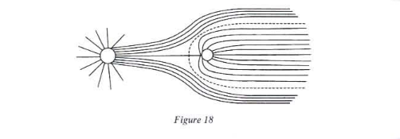
Faraday was the first to see electrogeometric space throb: it is not a vacuum that is between things, and lines of force are not content merely with simulating attractions or repulsions. The screen that they weave is teeming with pressures and strictions and allows the eye to see shudders from lateral tensions. The lines of force that emanate from a solenoid or a loop do not present themselves as a caricature of geometry, but rather as that which demonstrates the autonomy and cohesion of a reciprocal interlacing.
Consider the figure of a circle that floats in the usual Cartesian space; it is simply marked by a point-origin and remains totally indifferent to its surroundings (see fig. 19).
But an electrical circuit weaves about itself a network of dotted-line circles which balance out the crudity of the simple transit of charges (the figure in bold in diagram 16) and arouse other actions in the vicinity. It is thus that the laws of induction become ‘natural’; any intervention into a set of loops will arouse currents that aim to neutralize it. The lines of force (the ‘dotted line forces’) form a kind of secret complicity between the physical and the geometrical; they invent their own naturality.21
Consider figure 20.
Bringing a magnet towards the North face in the vicinity of a circuit provokes the appearance of an induced current and makes it possible to distinguish a ‘North face’ and a ‘South face’, suitable to counter the movement of the magnet. The lines of force are neither ‘real’ wires nor illustrations of knowledge already deposited in an encyclopaedia; they lead the exploration of a field which is neither exactly in Nature nor exactly in Understanding.
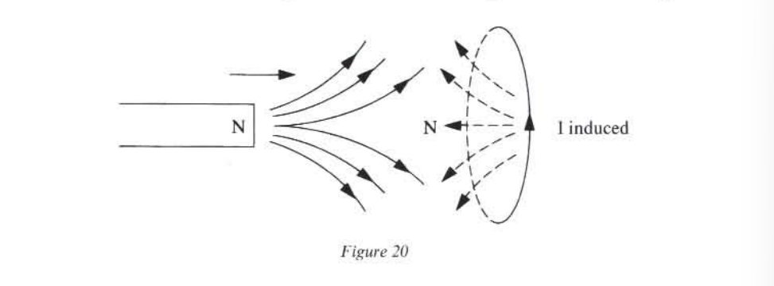
Faraday’s lines of force succeed in appropriating what we are proposing to call diagrammatic experiments and in giving a status to this language of ‘speaking with the hands’, of the ‘physical sense’ whose driving power was sensed by the greatest electrogeometers and which can grasp the instant when the metaphor solidifies, when the operation contends with it for sovereignty. This language feeds on gestures much more than on already available mathematical forms and possesses a particular allusive power, which can traverse the deductive chains of mathematical physics and illuminate whole sections of geometry. This field has an intrinsic experimental mission that protects it from the pretensions of the understanding (in this sense, it is irreducible to a transcendental grasp) and from the appetites of causalities. There is, in the literal sense, no ‘application’ of lines of fields, but rather an astonishing pedagogy by allusions which straight away introduce an elastic space and play with its capacity to resonate.
However, Faraday’s contemporaries were suspicious of these ‘mysterious’ lines of force22 and preferred the ‘simple and clear’ idea of action at a distance, which however drew the intuition towards the bottom, towards dead distance. But the new electromagnetic world with its lateralities jostles old habits, the peaceable gravitational clichés. Now it is necessary to embrace lines of force and to tie or untie skeins of wires or circuits. The ‘simple and clear’ idea of action at a distance involved only a distant and passive observer. It is now the hand and arms that encroach into the geometer’s look and that seem captives of the axis-loop system; paradox of tactile intuitions: they are the most ‘concrete’ but they are also the ones that are accepted with the greatest reservations.23
Maxwell recognized very early on the revolutions brought about by these machines for producing numbers by section, which propelled the experimenter’s sensibility to the heart of the field. He considered that it was first of all necessary to initiate oneself in the rituals of this new physical intuition before appropriating a mathematical knowledge and did not hide his great admiration:
From the straight line of Euclid to the lines of force of Faraday this has been the character of the ideas by which science has been advanced, and by the free use of dynamical as well as geometrical ideas we may hope for a further advance … The geometry of position is an example of a mathematical science stablished without the aid of a single calculation. Now, Faraday’s lines of force occupy the same position in electro-magnetic science that pencils of lines do in the geometry of position. They furnish a method of building up an exact mental image of the thing we are reasoning about. The way in which Faraday made use of this idea of lines of force in co-ordinating the phenomena of magneto-electric induction shows him to have been in reality a mathematician of a very high order — one from whom the mathematicians of the future may derive valuable and fertile methods.24
In order to relegate distance to the background definitely and to concern himself exclusively with degrees of transverse compression. Faraday insists on considering tubes of lines of force that are applied to a unit of surface that is transverse to the field (see fig. 21).
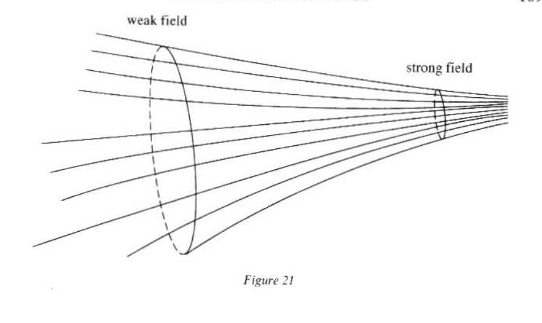
We should remember that the magnetic lines of force diffuse their action while sustaining a constant flux and therefore exert it according to the degrees of compression or abatement. This fundamental property illuminates the choice of tubes: the number of intersections of these lines with transverse surfaces is constant. Therefore, to quantify the intensity of the field in space, it is sufficient to count the lines intercepted per unit of space, just as the speed of a moving body can be measured by the number of markers it passes per unit of time. Space becomes, one might say, the prey of the tubes of force, even if they can only be seen by the ‘mind’s eye’, and Faraday makes the lateral attack of the magnetic flux almost palpable, just as Oresme had been able to unfold degrees of velocity by moving a mobile subject and representing greater or lesser velocity by a more or less wide rectangle. But it is necessary to emphasize an essential difference, Faraday’s great contribution, which was to make it sensitive to degrees of transverse compression.
We see what separates Faraday from the mathematical physics of the French tradition. For example, a mathematical theory of doublets (Poisson’s)25 does exist that ‘takes account’ of the effects of an electrical loop, but it remains subject to the old habits of thought of attraction-repulsion. The doublets of magnetic charges (boreal and austral) give the same formulae, but they leave intact the power of these ‘fluids’ which are supposed to soothe the imagination, of which Schelling said that it is ‘always desirous of substrate and has some difficulty in thinking of simple forces without something in which they inhere, which is no doubt very comfortable, but always corrupts the speculative perspective.’26
The ‘fluids’ immediately offer the security of the substrate to veil the obscure point of the magnetic and electrical polarizations: the substrate hurries to deliver up a background on which evocations, degraded but seductive forms of allusions, file past. Contrary to the balance that carried Argand towards the neutral axis of the imaginaries, the ‘fluid’ seals but neither mobilizes nor articulates anything: it sooths the imagination, but by no means prepares for the revolution of the lateral that overturned electrophilosophy.
Lines of force can irrigate space without calling on fluids for help: the concept of flux wholly envelops the axis-loop articulation and, as soon as the space beings to throb, the ‘extras’ that ‘filled it up’ vanish. We know that a conventional ‘formalism’ is not enough to rid the operation of these obscure points; ‘imaginary’ numbers become ‘complex’ only when geometers ‘see’ and as a geometric mean conquering a whole plane. this plane cannot be reduced to the ‘two-dimensional extension’ of our textbooks; it is a working area that lavishes ideas on anyone who decides to position himself there.
The mechanics of interaction at a distance hurries to wipe out the immense vacuum left between the points, and it is known how much this hiatus between pure geometry and causality irritated some of Newton’s contemporaries (see I,2). In return, the electrical repulsions and attractions do not ‘physically’ abolish the ‘geometrical’ interval; they leave the possibility of a play of equilibrium between the positional relations: the repulsions (respectively the attractions) overflow the segments if they are produced by two transverse currents of opposite direction (respectively of the same direction) (see fig. 22).
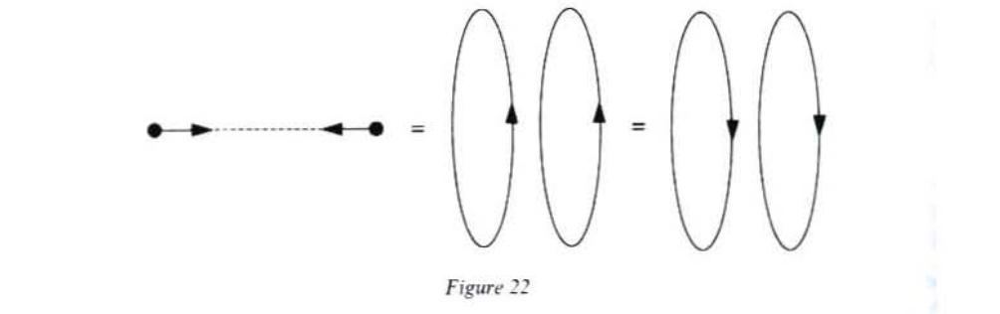
Electrical loops can, from the point of view of what they suggest (from the ‘diagrammatic point of view’), be considered as square roots: they are not content merely with neutralizing the confrontation of attractions or repulsions but can extract from it two axial positions involving a suspension of the transitive and instituting what might be called a moratorium in the game of causalities. In the same way, a square root does not aim to fill up the space that ‘remains’ between two preexisting terms but rather seeks to unscrew other dimensions; it is thus that Hamilton managed to extract three directions from one imaginative unit.
B. Hamilton: space as a square root
In the earliest mathematical physics, it is the motions of translation (the rulers of ‘mass’ of the principle of inertia) that articulate mechanics and pure geometry. These motions were considered ‘elementary and natural’, for they decompose readily like pieces of extension (spatial and temporal), taken out from the outside without regard for the position and, unlike the angle and rotations (see III,4,B), not involving the grasp of a progressive spreading out nor the ordeal of ambiguity. Thus d’Alembert writes in the introduction to his Traite de Dynamique:
All that we see clearly in the motion of a body is that it travels a certain space and that it takes a certain time to do so. It is therefore from this idea alone that all the principles of mechanics must be derived.27
Many of Faraday’s scientific contemporaries were beginning, like him, to find this partiality for translations over rotations excessive. In the note ‘Sur la dualité dans les sciences mathématiques’ of his Aperçu historique sur l’origine et le développement des méthodes en géométrie, Chasles wishes that geometers would turn their attention more to rotary motions since these represented the most neglected pole of a duality that dominated the system of the world and mechanics:
We will draw our second example of duality from the system of the world and the laws of mechanics. All bodies are endowed with two motions, the one being translation, the other rotation about an axis. This double motion is found again in the elementary motion of a solid body, that is to say in any and all infinitely small motions of this body.
This coexistence of two motions is an unremarkable fact today when mathematical theories explain it and would uncover it if the knowledge that we have did not result from the observations of astronomers. But if rotatory motion is in the eyes of the observer a property of the celestial bodies, as markedly as the motion of translation, and also inherent in everything that is subject to the actions of the forces of the Universe, then geometers have not treated these two kinds of motion with the same impartiality. They have considered the motion of translation the natural and elementary motion of the body.
… But can one not suppose, now, that the two inseparable motions of the bodies of the Universe must give rise to mathematical theories, in which these two motions would play the identical same role? And then, the principle that could unite these two theories, that could enable us to pass from the one to the other, like the theorem on which we have based the geometrical duality of the extension at rest, and that which has served to link between them the two modes of mechanical description of the bodies, this principle, we say, could throw great light on the principles of natural philosophy.
Can one foresee even where the consequences of such a principle of duality would lead? Having linked two by two all the phenomena of nature and the mathematical laws which govern them, would this principle not go back even to the causes of these phenomena? And can one then say that there would be no other law corresponding to the law of gravity, no other law that would play the same role as Newton’s and like it serve to explain celestial phenomena.28
It was therefore a matter of some urgency that one of the poles of the system of the world should be considered with ‘greater impartiality’ and that the articulation linking them should be known. It is in terms of this strategy of symmetrization between translations and rotations that we wish to assess Hamilton’s invention of quaternions. If, as Hamilton maintained, algebra is an ‘Order of Progression’, it was not enough simply to compare the other points to a reference point (the ‘origin’), nor even to produce them by translations (as the geometrical formulae and the linguistic formula vectum + vector = vehend do, see above, p, 161); it was also necessary to explore the roundabouts of by pivoting on oneself. In the introduciton to his Lectures, Hamilton identifies with what he defines as Argand’s method (see chapter III), but succeeds in involving the whole of space in the balancing device; he considers the three perpendicular units of a trihedron as geometrical means. The trihedron thus appears as what directs a criss-crossing of space (Descartes’ triple coordinates), but also and above all a place of indifference between the negative and positive units.29
Like Argand, Hamiltion lays great stress on cosidering proprotionality as original, prior to the definition of any multiplication. He starts by giving himself similarities between direction ratios, ‘biratios’, of the kind: ‘The direction is to what the direction is to ’, which, using his notation, is written ‘’.
‘[N]ot assuming the knowledge of any laws respecting their multiplication, I sought to determine what ought to be considered as the FOURTH PROPORTIONAL, , to the three rectangular directions ’;30 is thus the fourth proportional related to , let , and, above all, these three units appear as the solutions to a problem of balance to find the unit of direction such that 1 is to what is to . Let .
A multiplication can then be defined with the help of the preceding biratios. Thus, is another way of writing . We also obtain the following formula:
$$ (1)$$
These formulae clearly oppose the spatial units to the ‘extraspatial’ units and , and Hamilton explicitly links the latter with the ‘axis of progressive an unidimensional unfurling’ of time and opposes them to the vectorial units , which should be seen as negative unit square roots.31
This method of Hamilton’s is readily integrated into the strategy heralded by Argand for subverting the transitive: the ‘natural’ motion that ‘goes’ from to is that of the flow of time from the before to the after and can be suspended by lateral units.32 (see fig. 23).
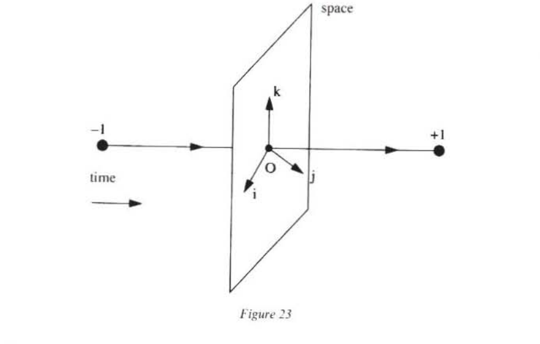
Space is not simply joined to time like a second flap of the extension, but appears as an articulated tripod of square roots. Hamilton’s biratios bring about a tipping into a veritable geometrical epokhe which liberates dimensions thus retrieved from the irreversible order of the world. This suspension of the transitive order turns zero, which was just a simple ‘origin’, into an instant squeezed between a before and an after, a stopping place where translations and rotations are articulated: the vectors are no longer simply ‘basic vectors’ but also the axes of virtual rotations which switch them round (see figure 24).
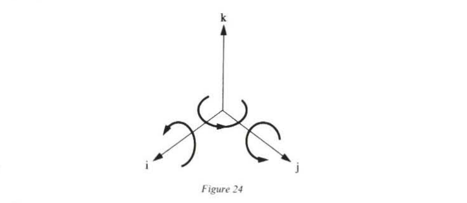
It is no longer that mysterious point where the coordinates prescribed by Descartes were swallowed up and merged together, but that where spring up like axial or polar vectors and where three ‘corkscrews’ are articulated at the same time. Hamilton therefore gave a kind of locomotive autonomy to Descartes’ trihedron and thus confers on it a dynamic and a completion in keeping with the universal duality heralded by Chasles. Hamilton’s triple instability point liberates gestures that, until this time, had remained captives of the body.
There is a multiplicative and rotatory analogue of the formula of the vection act (vector + vehend = vectum), which is the version act (carried out by a versor) and which gives rise to the formula:
Hamilton gives the example of the training of a telescope. This example illustrates clearly the multiplication of vectors and their double role: vectors directing a virtual aim and rotation axes that switch them (on this point, see Appendix II).
Hamilton’s articulated triplet has an obvious experimental mission: it achieves what was perhaps Avicenna’s secret dream: to propel a body by thought to explore the universe. Hamilton carefully distinguished scalars, produced by the multiplication of two parallel directions and whose square is always positive, and vectors, the genuine spatial units (the quadratical versors), associated with processes of orientation and whose square is always negative (see Appendix I). Quaternions therefore make it possible to distinguish and to condense into a single symbol two space experiments: the scalar experiment of dilatations and the vectorial experiment related to perpendicular torsions (see fig. 25 and Appendix I).
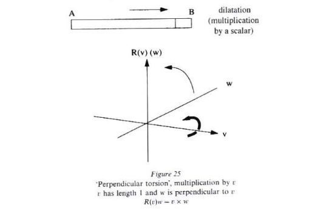
Hamilton suspected the immense significance of his discovery and concentrated the last twenty years of his life to it.33 Maxwell recognized immediately that quaternions introduce into the geometry and physics of the future a revolution as important as that of Descartes’ coordinates:
Now Quaternions … is a mathematical method, but it is a method of thinking, and not, at least not for the present generation, a method of saving thought … It calls upon us at every step to form a mental image of the geometrical features represented by the symbols, so that in studying geometry by this method we have our minds engaged with geometrical ideas.34
Or again:
But for many purposes of physical reasoning, as distinguished from calculation, it is desireable to avoid explicitly introducing the Cartesian coordinates, and to fix the mind at once on a point of space instead of its three coordinates, and on the magnitude and direction of a force instead of its three components. This mode of contemplating geometrical and physical quantities is more primitive and more natural than the other, although the ideas connected with it did not receive their full development till Hamilton made the next great step in dealing with space, by the invention of his Calculus of Quaternions … I am convinced, however, that the introduction of the ideas .. will be of great use to us in the study of all parts of our subject, and especially in electrodynamics, where we have to deal with a number of physical quantities, the relations of which to each other can be expressed far more simply by a few expressions of Hamilton’s, than by the ordinary equations.35
And:
A most important distinction was drawn by Hamilton when he divided the quantities with which he had to do into Scalar quantities … and Vectors …
The invention of the calculus of Quaternions is a step towards the knowledge of quantities related to space which can only be compared for its importance, with the invention of triple co-ordinates by Descartes.36
Maxwell is aware that quaternions promise homogenization experiments that are much richer and much more suited to electrical forces than Descartes’ dimensions. Indeed, Hamilton’s triple corkscrew orchestrates space experiments that superpose themselves exactly on those conducted by Faraday’s lines of force; rotations sketched out in dotted lines by the magnetic field and the lateral attractions of currents match infinitesimal torsions and spatial square roots. To combine Faraday and Hamilton is to complete a grandiose programme and to understand the field as this precious ‘point’ where geometry and physics balance one another out. Electrogeometric space is realized by the articulation of the translation-rotation duality with that of the electrical field and magnetic field. The translations superpose themselves exactly on the motions of the charges rushing down the slope of potentials and rotations that make these planes of light polarization pivot.
Another distinction among physical vectors is founded on a different principle, and divides them into those which are defined with reference to translation and those which are defined with reference to rotation. The remarkable analogies between these two classes of vectors is well pointed out by Poisot in his treatise on the motion of a rigid body…
According to Ampère and all his followers, however, electric currents are regarded as a species of translation, and magnetic force as depending on rotation. I am constrained to agree with this view, because the electric current is associated with electrolysis, and other undoubted instances of translation, while magnetism is associated with the rotation of the plane of polarization of light, which, as Thomson has shewn, involves actual motion of rotation.37
In order to forget its concepts, electrogeometry as it were provokes the field by different kinds of spatial intervention. This experimental geometry does not so much appear through immediate position-taking as through differential grasps, infinitesimal translations for the gradient, little loops encircling a circuit for the rotational, infinitesimal volumes that envelop a source in order to define the divergence (see fig. 26 and Appendix III).
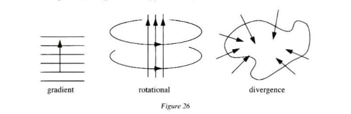
By combining infinitesimal calculus and the multiplication of the ‘spatial units’, , Hamilton succeeds, with his famous operator (see Appendix III), in capturing in a single symbol the articulation of Chasles’s and Ampère’s dualities. He also demonstrates the conversion of the axial-magnetic point of view into the polar-electrical point of view.
The closure of the axis-loop system is completed by Maxwell’s equations in the vacuum (the ‘ether’), which conjure two field waves tangled up like two helices of space-time.
C. The screw as bold metaphor
Hamilton’s operator therefore plays the crucial role of an ideal corkscrew that orchestrates, in geometry and electricity, a subversion of transitivities and makes it possible to bring into operation the analogy ‘rotation is to translation what magnetism is to electricity’.
Maxwell’s equations interlacing electrical and magnetic fields like two helices in space-time are the culmination of a meditation on the screw as a ‘special mechanism’ capable of articulating length and width:
Now it seems natural to suppose that all the direct effects of any cause which is itself of a longitudinal character, must be themselves longitudinal and that the direct effects of a rotatory cause must be themselves rotatory. A motion of translation along an axis cannot produce a rotation about that axis unless it meets with some special mechanism, like that of a screw, which connects a motion in a given direction along the axis with a rotation in a given direction round it; and a motion of rotation, though it may produce tension along the axis, cannot of itself produce a current in one direction along the axis rather than the other.38
The screw that endows the length with perforation power through a flick of the wrist is part of a whole set of diagrams and metaphors intended by Maxwell to promote a new physico-geometric self-evidence. We should speak of a technology of the metaphor that possesses an autonomous logic and precedes formalization.
We know how much Maxwell admired the suggestiveness of lines of force and wanted to have a better understanding of their ‘real’ character:
[This] naturally tends to make us think of the lines of force as something real, and as indicating something more than the mere resultant of two forces, whose seat of action is at a distance, and which do not exist there at all until a magnet is placed in that part of the field. We are dissatisfied with the explanation founded on the hypothesis of attractive and repellent forces directed towards the magnetic poles … we cannot help thinking that in every place where we find these lines of force, some physical state or action must exist in sufficient energy to produce the actual phenomena.39
Maxwell understands the screw as a radicalization of Faraday’s lines of force. For him it is above all a question of grasping their capacity for contaminating a whole space, a capacity that we know made them ‘obscure’ contemporaries, but which was the condition of their victory over the forces of interaction at a distance. The latter are ‘clear’ because they are only frozen icons: Peirce recognized that they refer only to themselves without mobilizing the space around them.40 Like lines of force, Maxwell’s screw is ‘obscure’: it shows that the gesture that smashes the icons is contemporaneous with that which brings out the dimensions.
It is interesting to see it at work in a particular case: that of a ‘model’ of ether as a system of molecular vortices, which illustrates what Maxwell would later call a ‘bold metaphor’. Four years before the formal presentation of the celebrated equations of the Treatise on Electricity and Magnetism, the article ‘On Physical Lines of Forces’41 sets out to
investigat[e] the mechanical results of certain states of tension and motion in a medium, and compar[e] these with the observed phenomena of magnetism and electricity … I propose now to examine magnetic phenomena from a mechanical point of view, and to determine what tensions in, or motions of, a medium are capable of producing the mechanical phenomena from a mechanical point of view, and to determine what tensions in, or motions of, a medium are capable of producing the mechanical phenomena observed. If, by the same hypothesis, we can connect phenomena of magnetic attraction with electromagnetic phenomena and with those of induced currents, we shall have found a theory which, if not true, can only be proved to be erroneous by experiments which will greatly enlarge our knowledge of this part of physics.42
Maxwell suggests thinking of these motions, these ‘tensions’ in the medium, as ‘mechanical illustrations to assist the imagination’.43 How is the screw as an allusive stratagem going to ‘assist’ the imagination? How do the old mechanical images prepare themselves to retaliate within the axis-loop system discovered by Faraday and Ampère? Let’s assume with Maxwell that the universe is filled with a magnetic ether made up of molecular vortices, such that the direction of the axis of these vortices is tangential to the lines of force and their angular speed proportional to the intensity of the field (see fig. 27).

With his system of gear wheels, Maxwell already manages to discovery many of the laws and phenomena of static magnetism. Note also that the material nature of these gears matters much less than their elastic contacts and the diverse modes of cooperation of intensity that they imply.
An important stage, that of the dynamic, remains:
‘How are these vortices set in rotation?’ and ‘Why are they arranged according to the known laws of lines of force about magnets and currents?’ … We have, in fact, now come to inquire into the physical connexion of these vortices with electric currents, while we are still in doubt as to the nature of electricity.44
It is here that we have to remember that these ‘gears’ are by no means supposed to be ‘real’, but of the same type as those analysed in III,5,C. A gear wheel, taken on its own, illustrates the analogy ‘the intensity is to the field what the angular speed is to the rotation’, it is associated with the usual triptych (see II,1, formula(1)).
It is now necessary to tackle the delicate problem of the articulation of the vortices. Remember that the ‘gears’ of chapter III split the mobility symmetrically and that from the point of contact there emerge two twin triptychs which are incapable of coalescing in a translation. We know that it is this symmetry between the ‘base’ and the ‘roller’ that gives all its force to the diagram and prevents if rom being degraded into a functional relation.
We see the difficulty: a given translation introduces a dissymmetry from the outside that cannot result from the combination of two opposed rotations (see fig. 28).
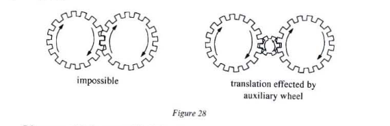
Of course, this is exemplified ‘in nature’ by frictions, which is why Maxwell writes the following:
I have found great difficulty in conceiving of the existence of vortices in a medium, side by side, revolving in the same direction about parallel axes. The contiguous portions of consecutive vortices must be moving in opposite directions; and it is difficult to understand how the motion of one part of the medium can coexist with, and even produce, an opposite motion of a part in contact with it.
The only conception which has at all aided me in conceiving of this kind of motion si that of the vortices being separated by a layer of particles, revolving each on its own axis in the opposite direction to that of the vortices, so that the contiguous surfaces of the particles and of the vortices have the same motion.
In a mechanism, when two wheels are intended to revolve in the same direction, a wheel is placed between them so as to be in gear with both, and this wheel is called an ‘idle wheel’. The hypothesis about the vortices which I have to suggest is that of a layer of particles, acting as idle wheels, is interposed between each vortex and the next, so that each vortex has a tendency to make the neighboring vortices revolve in the same direction with itself.45
Maxwell thus obtains a system of bulky wheels (the ‘vortices’) joined together by small balls (the ‘particles’). It is here that Maxwell crosses an important threshold: he identifies the motion of these particles with an electric current:
It appears therefore that, according to our hypothesis, an electric current is represented by the transference of the moveable particles interposed between the neighboring vortices. We may conceive that these particles are very small compared with the size of the vortex, and that the mass of all the particles together is inappreciable compared with that of the vortices … The particles must be conceived to roll without sliding between the vortices which they separate, and not to touch each other, so that, as long as they remain within the same complete molecule, there is no loss of energy by resistance.46
A few pages further on, Maxwell again describes the liaison between the ‘large wheels’ and the ‘balls’:
The particles forming the layer are in rolling contact with both the vortices which they separate, but do not rub against each other. They are perfectly free to roll between the vortices and so to change their place … These particles, in our theory, play the part of electricity. Their motion of translation constitutes the electric current.47
This is going to make it possible to describe more precisely how Maxwell forges a scientific praxis of analogy and the introduction of similarity. Black, Richards and other modern theoreticians of metaphor have shown that metaphor does not sanction a preexisting resemblance, but acts by creating similarity.48 Some authors have even spoken of the ‘annexation’ of authority by metaphor and of the ‘invasion’ of domains of extensions.49 Here, the gears, the ball bearings and the liaisons function as metaphors, in the sense that a theory that is already old to familiar intuitions invests and illuminates a new domain — electromagnetism — by gaining a fresh youthfulness there. It is still the articulation point of a balance of Being — the axis-loop system — that orchestrates the ‘annexation’ by diagrams of gears. The latter come from a pure kinematics; we have seen how carefully Maxwell separates out frictions and dismisses as subsidiary the question of the nature of the ‘medium’. This brings us much closer to the diagrammatic asceticism already practised by de Broglie to demonstrate the duality of the motion of the material point velocities and the horizon of phase velocities (see II,3). This purification as such is essential to concentrate all attention on the articulation and on its capacity to find two motions in one mobile point, just as the metaphor captures two ideas in one without ever mixing them up.
Maxwell compels the articulation to play a double role:
- it is first of all supposed to be ‘mechanical’, to legitimate the introduction of the ball bearing and therefore to make the system of vortices ‘probable’;
- it is then raised to the level of a model of connection, concerning which Maxwell emphasizes that it may not exist in nature.
Thus, nobody should be taken in by this mechanical staging. We discover the force of the metaphor, which no more confuses these vortices with real gears than it clarifies a dangerous man said to be ‘wild’ as a simple animal. Here, metaphor is a Trojan horse that takes on the guise of former mechanical habits in order to occupy the new electrical territory. But it was necessary to prepare for the annexation by a diagrammatic asceticism, in particular here the calculation based on relations of quantities that separate the actualization of magnitudes. Thus appears what is really convincing: the rebalancing in thought of the system of big wheels by a system of small balls is also capable of restoring the axis-loop system if one of its components is mutilated. The analogy is ‘self-evident’ when the idea of the couple asserts itself and the ‘celibacy’ of the vortices becomes unbearable, calling for the completion of the mechanism. A seesawing motion installs the analogy, which is worded thus: ‘The magnetic action is to the motion of the large wheels what electrical current is to the displacements of the small balls’.
The dissymmetry introduced by the large wheels is thus compensated for and any disturbance affecting the first system has repercussions for the second; conversely, we rediscovery in the ether as the balance this involutional characteristic which gives all its cohesion to the axis-loop system, which enables it to prescribe a consistent ritual of thought experiments and of diagrams spilling over, which authorizes the metaphor in physics as a calculated categorical error of an exceptional fecundity. Screw, ether, vortices: these belong to a technology for setting up similarity, which aims to promote what Maxwell himself called bold metaphors, suited to guiding the progress of the researcher between a physics already completely mathematized and physical hypothesis:
The results of this simplification may take the form of a purely mathematical formula or of a physical hypothesis. In the first case we entirely lose sight of the phenomena to be explained; and though we may trace out the consequences of given laws, we can never obtain more extended views of the connexions of the subject. If, on the other hand, we adopt a physical hypothesis, we see the phenomena only through a medium, and are liable to that blindness to facts and rashness in assumption which a partial explanation encourages. We must therefore discover some method of investigation which allows the mind at every step to law hold of a clear physical conception, without being committed to any theory founded on the physical science from which that conception is borrowed, so that it is neither drawn aside from the subject in pursuit of analytical subtleties, nor carried beyond truth by a favourite hypothesis.
In order to obtain physical ideas without adopting a physical theory we must make ourselves familiar with the existence of physical analogies. By a physical analogy I mean that partial similarity between the laws of one science and those of another which makes each of them illustrate the other.50
Fourteen years later, Maxwell is more explicit about this technique of illustration when he distinguishes two types of metaphor:
The figure of speech or of thought by which we transfer the language and ideas of a familiar science to one with which we are less acquainted may be called Scientific Metaphor.
Thus the words Velocity, Momentum, Force, &c. have acquired certain precise meanings in Elementary Dynamics. They are also employed in the Dynamics of a Connected System in a sense which, though perfectly analogous to the elementary sense, is wider and more general.
… The characteristic of a truly scientific system of metaphors is that each term in its metaphorical use retains all the formal relations to the other terms of the system which it had in its original use …
There are certain electrical phenomena, again, which are connected together by relations of the same form as those which connect dynamical phenomena. To apply to these the phrases of dynamics with proper distinctions and provisional reservations is an example of a metaphor of a bolder kind; but it is a legitimate metaphor if it conveys a true idea of the electrical relations to those who have already trained in dynamics.51
Strict metaphors are therefore more ‘obvious’ than ‘bold’ metaphors. Strict metaphors depend on formal analogies: it is the same formula that makes it possible to speak of generalized displacements and of generalized forces, and it is the same triptych that is at work in the formulae that give a length or a work (see II,1). The ‘strict’ metaphor therefore takes few risks: it superposes two preexisting collections of formulae and ratifies a proof that is already available in a diagram. The ‘bold’ metaphor forces the analogy and steps over degrees of proof; its world is that of gestures, allusions and diagrams. It transports thought experiments, allusions from the old theory into the new: the latter gains a whole set of habits, the former a new rigour. But this transportation is not arbitrary: there is a discipline in scientific metaphor. It is as it were activated by an experience of spilling over and completion of certain diagrams: the metaphorical ‘annexation’ that is legitimated by the recognition of a duality that displaced itself more or less clandestinely in the dotted lines of the diagrams of the old theory.
Bold metaphor must therefore be related to an effort of homogenization and stripping down of articulation in order to be scientific. If a symmetry is ready to redverberate, it comes running. It can intervene modestly as a ‘partial’ similarity, but always crystallized around key points: the fulcurm of a balance, an auxiliary wheel, axes that command a whole network of familiar images or formulae. These points ensure the maintenance of the relationship of interprenetration which nourishes metaphor; they prevent its dislocation into two mutually indifferent entities that continually cling to substrates.
Ether is an articulation point that unscrews spatial dimensions and the electromagnetic field at the same time. Maxwell had been right in demanding ‘some special mechanism, like that of a screw’, but it was the fault of nineteenth-century physics that it was solidified into a substance. This screw balances magnetic units of force and electrical units of force and Einstein, dissolving the ether, would see in it the hinge-horizon of a new kinematics.
Science has known few such aggressive metaphors; the electrical screw enrolls itself in a line of descent of increasingly virulent diagrams, the progress of which we have followed through a few pages:
- that of a point, simple scar of a designation subject to the good wishes of a reference trihedron to receive its determinations;
- that of the point-cavity, which can make an extraction tangible;
- that of the point-horizon, which compresses and unfolds degrees of depth;
- that of the points of contact and pivot-points, capable of symmetrizing the dissimilar and of arousing a dimension.
Everything therefore seems to be played out in the interlace. Perhaps it is necessary to push the reciprocal embrace experiment which had triumphed over the clichés of interaction at a distance still further and to find instability points that are yet more disconcerting that a helix? It is certainly true that the spiral causes a density to rise up by giving length back to the width and by articulating an elevation and a separation. It reawakens the relief lulled to sleep in the width, by parametring the opening of an angle: we can follow the penetration of the corkscrew with our eyes or observe that the watch, laid on a transparent plane, turns in one direction or the other, according to whether it is seen from above or below.
But, in all these situations, we still remain spectators of the birth of the third dimension, which remains ‘spatial’. The coils of the knot leave us still more perplexed; these are genuine geometrical events that labour very hard to awaken all of the body’s mobility, laterality or verticality. Why is the knot so disquieting?
6. Towards the Knot as Secularization of the Invisible
The knot determines an environment. There is a kind of allusive gravity, a fierce resistance to any external homogenization. There is neither length, nor density, nor width: here, all dimensions are ‘equal’, but this equality is the direct opposite of the Cartesian dimensions that congealed the coordinates into a point. It is impossible to localize, to circumscribe or to penetrate a ‘real’ territory ruled over by the interlace. there is no outside or inside: the knot ties itself and is at one with what it links. There is no capsule which, if it were pierced, would unveil its secret: the knot poses the perplexing enigma of interaction with itself: it links itself with itself. A knot is not a trajectory: we do not master it by putting ourselves ‘in the place’ of a mobile point that would describe the curve. The knot pushes the tension between the mobile, the lateral and the density to the extreme: that is why it is impossible to grasp it by attending to only one of its components. On the other hand, cursiveness, top and bottom, right and left seem to enter a fierce contest to seduce our intuition, even if it entails resuscitating the conventions and postures overthrown by the interlace.52
The interlace must be accepted for what it is: a three-headed hydra that has to be tamed with a single blow. The interlace does not occupy a ‘place’ in our space, it reminds us that space is the become equality of the dimensions. The latter leaves scars: an interlace possesses a tough ambiguity which prohibits all flattening without intersection (see fig. 29).
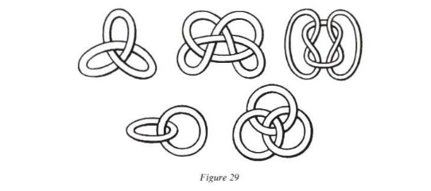
Coils and knots forget a discipline of the intuition that makes it possible to escape the cumbersome silliness where any given volume or solid becomes mired. The knot leads to a fearful experience of the implosion of the spatial and the explosion of the transitive. It is also perhaps a way of getting round the erosion of metaphors which are always under threat from convention: the interlace makes it possible precisely to grasp that turbulent moment where the metaphor increases its sway by finding two ideas in one.
This was already a matter of fascination for nineteenth century electrogeometers, who quite rightly suspected that diagrams of knots were not simple illustrations. Some had even conceived quite complicated models to describe these ‘vortices’ knotted in the ether, but all these models were discarded. We now have a better understanding of the profound reason behind this: the secret of the knot goes well beyond the space which it is supposed to bathe: it goes so far as to smash the classical relationship between letter and image.
Mechanical models of ether ingenuously invented these ‘real’ vortices, which were incapable of dealing with the noetic propulsions captured by the knot: these models had not broken with the rigidities of spatial intuition and mechanical transitivities.
By way of compensation, modern geometry and the discovery of the unsuspected relations between knot theory and statistics aim to capture the whole allusive power of the knot, to position themselves at the very heart of the intersection. An intersection is not a point, but explodes as a geometrical event: something has happened which suggests a spacing out (see fig. 30).
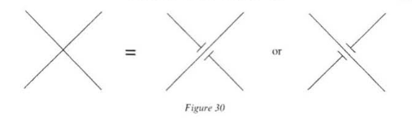
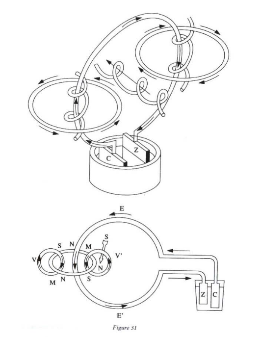
It is perhaps this kind of experiment that Irish monks were seeking as early as the seventeenth century when they ventured into their labyrinths. It has been shown that the animated letters and illuminations of the manuscripts were not added to the text as a ‘decoration’ or a ‘supplement’, but were intended to solicit the patience of the reader, who is always in a hurry to receive the information contained in a text.53 We know that there is a kind of geometrical modesty about the interlace which insists on an effort to grasp the relief that it unfolds. By no means there to ‘fill in’, the coils of the illuminations are intended to remind us that the speculative cannot be reduced to the literal and is not exhausted by aligning signifying units. Contemporary research is not far removed from this. It is rediscovering dimension as that which revolts against all verbal process and only allows itself to be grasped by new notations. The latter are not ‘ornaments’, but rather enjoy the privilege of controlling the allusions and the presentiment of forms.
Notes
Schelling, Allgemeine Deduktion des dynamischen Prozesses oder der Kategorien der Physik, Zeitschrift für spekulative Physik (Iena and Leipzig, 1800) (= Werke, I-4, pp. 745-816).↩
We have deliberately neglected the question of the lateral in optics (the work of Fresnel and Arago). On these questions see A. Dahan, La Physique mathématique en France de 1800 a 1840: Les voies de Cauchy (thesis), Nantes, 1990; and J. Buchwald, The Rise of the Wave Theory of Light (Chicago: University of Chicago Press, 1989).↩
Schelling, Bruno, p. 147: ‘Now, in this nature wholly perfect among natures, the form is always equal to the essence, because the finite … is not contained by it as finite.’↩
Schelling, Allgemeine Deduktion, § 13.↩
On the theory of electricity at the beginning of the nineteenth century, see E. Whittaker, A History of the Theories of Aether and Electricity (London, 1951).↩
We are restricting ourselves here to classical mechanics: the photon is not part of the discussion.↩
A.M. Ampère, Théorie mathématique des phenomenes electrodynamiques (1826) (Paris: Blanchard, 1958), 74.↩
Schelling, Allgemeine Deduktion § 33.↩
Ibid., § 34.↩
Hans Christian Ørsted (1777-1851), a Danish physicist and chemist, was deeply influenced by Naturphilosophie and shared the ideas of the German physicist Ritter on the unification of natural forces (as early as 1798, Ritter had conjectured the unity of the electrical and chemical forces). Thus he writes in his Recherches sur l’identité des forces chimiques et electriques (Paris, 1813, presented by Ørsted himself as the translation of his Ansichten der chemischen Naturgesetze, published in Germany 1812): ‘Finally we will add that the philosophy of nature that has been cultivated in Germany these past twenty years could also lay claim to some of the views that we are going to express’ (p. 11). From 1812, Ørsted senses the action of electricity on a compass; he experiments with it in 1820. On the life of Ørsted, see B. Dibner, Ørsted and the Discovery of Electromagnetism (Connecticut: Burndy Library, 1961). For Ørsted’s original articles, see H.C. Ørsted, Scientific Papers (Copenhagen: A.F. Host and Son, 1920), 3 vols.↩
In the article where he announces his discovery (‘Experiments on the Effect of a Curent of Electricity on the Magnetic Needle’, Annals of Philosophy, 1820, 16, pp. 273-76), Ørsted writes: ‘We can conclude that a circular motion is implied in these effects.’↩
A.M. Ampère, Théorie mathématique, p. 3.↩
Ibid., p. 83.↩
Galvanism. The name given to certain electrical phenomena affecting the muscles and nerves, which were discovered by the Italian physicist and doctor Louis Galvani (1737-98), who concluded that animals are endowed with a particular kind of elasticity. This theory was refuted by the physicist Volta.↩
William Rowan Hamilton (1805-1865) was a prodigious mathematician; he wrote a remarkable article on caustics when he was seventeen and was named Astronomer Royal of Ireland at the age of twenty-two. Like Ørsted, Hamilton possessed a vast literary culture; he was godfather to Wordsworth’s grandchildren; he visited Coleridge at Highgate — the two became friends and maintained a regular correspondence (Coleridge had introduced Naturphilosophie to England). Hamilton thought himself a disciple of Pythagoras and wrote that ‘the goal of the physical sciences is … to learn the language and interpret the oracles of the Universe’. On Hamilton’s life, see R.P. Graves, Life of Sir Hamilton, (Dublin, 1882).↩
W.R. Hamilton, Lectures on Quaternions, Lecture II, p. 33.↩
Ibid., p. 34.↩
The term ‘line of force’ (linea virtutis) was used by scholastic philosophers in connection with magnetism (See Philosohpie magnetica [1629] by Niccolo Cabeo, quoted by E. Whittaker, A History of Theories of Aether and Electricity, pp. 33-35).↩
See Whittaker, ibid., p. 171 and n.↩
Letter to Michael Faraday, 9 November 1857, reprinted in Maxwell, Scientific Letters and Papers (Cambridge: CUP, 1980), I, p. 550.↩
On lines of force, see also F. Balibar, Einstein 1905, De l’Ether au quanta (Paris: PUF, 1992).↩
E. Whittaker, A History of Theories of Aether and Electricity, p. 172, n. 5, cites Sir George Airy, ‘I can hardly imagine anyone … hesitat[ing] an instant in the choice between this simple and precise action [action at a distance], on the one hand, and anything so vague and varying as lines of force, on the other.’↩
On feeling and distance, see Erwin Straus.↩
J.C. Maxwell, ‘Praise of Faraday’, in The Scientific Papers (Cambridge University Press, 1890), 355-60.↩
See J.-B. Biot, Memoires at the Academy of Sciences, 30 October and 18 December 1820; and D. Poisson, Memoire sur la théorie du magnétisme, 2 February 1824.↩
Schelling, Allgemeine Deduktion, § 31.↩
D’Alembert, preliminary discourse to the Traité de dynamique (2nd end, 1758) (Paris: Gauthier-Villars, 1921), xxvi.↩
M. Chasles, Aperçu historique sur l’origine et le développement des méthodes en géométrie, 1837 (3rd edn, 1889), pp. 411-12.↩
W.R. Hamilton, Lectures on Quaternions, Preface, p. 61: ‘as is done in that known generalization of such multiplication, for lines within one plane, which … ought (I think) to be called the Method of Argand.’ See also the interesting commentary on analogy and similitude on p. 54 (we should never forget that Hamilton was also a theologian and that it is analogical balances that grasp transcendences rationally).↩
Ibid., p. 54.↩
Ibid., p. 60.↩
See also ibid., p. 2.↩
See R.P. Graves, Life of Sir Hamilton.↩
J.C. Maxwell, ‘Quaternions’, Nature, 9, 1873, reprinted in Scientific Letters and Papers, II, pp. 951-52.↩
J.C. Maxwell, A Treatise on Electricity and Magnetism, 2 vols, 3rd edn (Oxford: Clarendon Press, 1892), vol. I, p. 9.↩
J.C. Maxwell, ‘On the Mathematical Classification of Physical Quantities’, Proceedings of the London Mathematical Society, 1871, p. 259.↩
Ibid. ,p. 263.↩
J.C. Maxwell, The Scientific Papers, p. 503.↩
Ibid., pp. 451-52.↩
C.S. Peirce, Ecrits sur le signe, Paris, Seuil, 1978: ‘Any physical force reacts between a pair of particles, each of which serves as the other one’s index.’↩
J.C. Maxwell, The Scientific Papers, pp. 451-503.↩
Ibid., p. 452.↩
Ibid.↩
Ibid., p. 468.↩
Ibid.↩
Ibid., p. 471.↩
Ibid., p. 486.↩
M. Black, Models and Metaphors (Cornell University Press, 1962); I.A. Richards, Philosophy of Rhetoric (London, 1936).↩
N. Goodman, Languages of Art: An Approach to a Theory of Symbols (London: Oxford University Press), 85.↩
Maxwell, The Scientific Papers, p. 155.↩
Ibid., vol. II, p. 227.↩
Jacques Lacan understood the subversive power of the knot, which is comparable both to algorithms and allusion. There is indeed a spatial imperium, which is conquered through a rearticulation of cursiveness, degrees of height and laterality.↩
By setting up a kind of competition with ‘pure’ writing, they emphasize the rights of an initiatory kind of rationality, appreciable by a few rare connoisseurs careful not to succumb to the easy transitivities of the literal or to the fascination of images. On this subject see R.B. Stevenson, ‘Aspects of Ambiguity and Interlace’, Ulster Journal of Archeology, 1981-82, 44-45; L. Bieler, Ireland, Harbinger of the Middle Ages, 1963; J.-C. Bonne, ‘Noeuds d’Ecriture’, in the conference Text, Bild, Dumchen and Neilich (eds) (Berlin 1888), 90-101.↩